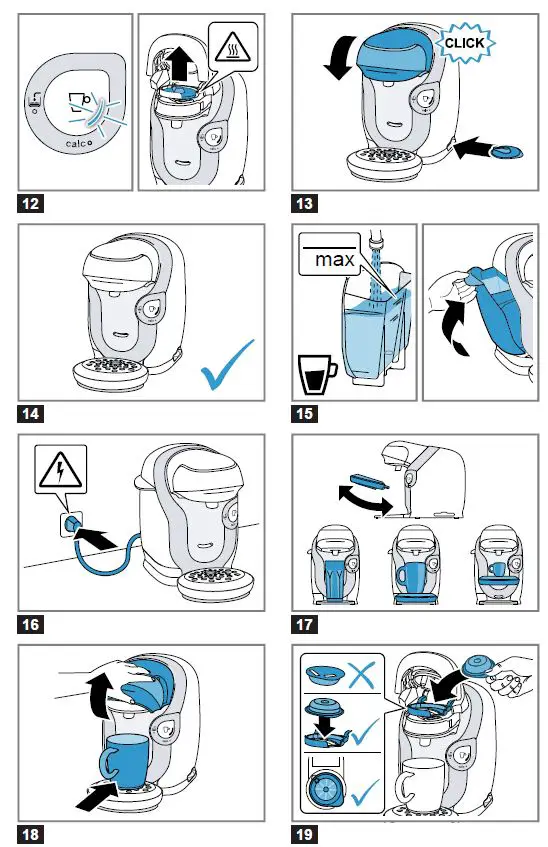

How to Use the Coffee Maker
- Plug in and fill: Plug the machine in and fill the water tank with fresh water
- Place mug: Put a mug or cup on the removable drip tray. The tray is adjustable for different cup sizes.
- Open brew head: Lift the top of the machine to open the brew head.
- Insert T-Disc: Take a T-Disc (TASSIMO pod) and place it in the brew head with the barcode facing down. The disc should be properly seated.
- Close brew head: Close the top of the machine until you hear it click into place.
- Start the drink: Press the start button. The machine will read the barcode and begin brewing automatically.
- Wait for completion: Wait until the brewing is finished and the light stops flashing to safely remove your mug.
- Remove and enjoy: Remove your mug and add any desired additions like milk or sugar.
- For multi-disc drinks: For drinks like a cappuccino, use two T-Discs in sequence (e.g., the milk pod first, then the coffee pod).
For more help, contact us.